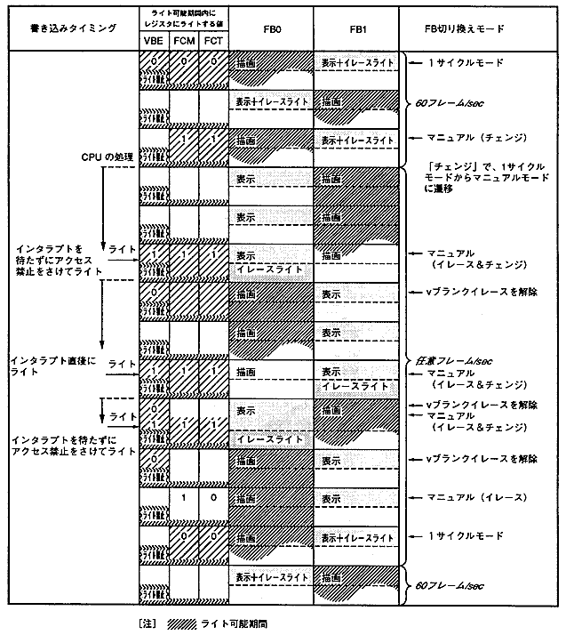

★HARDWARE Manual
★VDP1ユーザーズマニュアル
★HARDWARE Manual
★VDP1ユーザーズマニュアル
FBCR |
bit15 | bit14 | bit13 | bit12 | bit11 | bit10 | bit９ | bit８ |
bit７ | bit６ | bit５ | bit４ | bit３ | bit２ | bit１ | bit０ |
|---|---|---|---|---|---|---|---|---|---|---|---|---|---|---|---|---|
| 0 | 0 | 0 | 0 | 0 | 0 | 0 | 0 | 0 | 0 | 0 | EOS | DIE | DIL | FCM | FCT |
VBE | FCM | FCT | 切り替えモード | 切り替わり時間 |
|---|---|---|---|---|
0 | 0 | 0 | 1サイクルモード | 1／60秒毎にチェンジ |
0 | 0 | 1 | 設定禁止 | − |
0 | 1 | 0 | マニュアルモード（イレース） | 次フィールドでイレース |
0 | 1 | 1 | マニュアルモード（チェンジ） | 次フィールドでチェンジ |
1 | 0 | 0 | 設定禁止 | − |
1 | 0 | 1 | 設定禁止 | − |
1 | 1 | 0 | 設定禁止 | − |
1 | 1 | 1 | マニュアルモード | Vブランクでイレース、 |
設定値 *1 | *2 | *2 | フレームバッファ | 切り替わり | |
FCM | FCT | ||||
０ | ０ | 描画 | 表示＋イレースライト | 1サイクルモード | 60フレーム/秒 |
表示＋イレースライト | 描画 | ||||
描画 | 表示＋イレースライト | ||||
表示＋イレースライト | 描画 | ||||
１ | １ | 描画 | 表示＋イレースライト | マニュアルモード（チェンジ）*3 | |
表示 | 描画 | 20フレーム/秒 | |||
１ | ０ | 表示 | 描画 | マニュアルモード（イレース）*4 | |
１ | １ | 表示＋イレースライト | 描画 | マニュアルモード（チェンジ）*4 | |
描画 | 表示 | ||||
１ | ０ | 描画 | 表示 | マニュアルモード（イレース）*5 | |
０ | ０ | 描画 | 表示＋イレースライト | 1サイクルモード | |
表示＋イレースライト | 描画 | 60フレーム/秒 | |||
描画 | 表示＋イレースライト | ||||

DIE | DIL | インタレースモード | 次のフレームチェンジ後の描画 |
0 | 0 | ノンインタレース／ | 全ライン描画 |
0 | 1 | 設定禁止 | − |
1 | 0 | 倍密インタレース | 偶数（EVEN）ラインのみ描画 |
1 | 1 | 倍密インタレース | 奇数（ODD）ラインのみ描画 |
●単密インタレースの表示 ●倍密インタレースの表示 ┌────────┐ ┌────────┐ │ ０ライン ├────────┐ │ ０ライン ├────────┐ ├────────┤ ０ライン │ ├────────┤ １ライン │ │ １ライン ├────────┤ │ ２ライン ├────────┤ ├────────┤ １ライン │ ├────────┤ ３ライン │ │ ２ライン ├────────┤ │ ４ライン ├────────┤ ├────────┤ ２ライン │ ├────────┤ ５ライン │ │ ３ライン ├────────┤ │ ６ライン ├────────┤ └────────┤ ３ライン │ └────────┤ ７ライン │ └────────┘ └────────┘ ・見た目は縦２５６ライン ・見た目は縦５１２ライン ・１／６０秒毎にフレームチェンジして ・各フレームバッファには、偶数 ２回同じ描画をするか、 （または奇数）ラインのみ描画 １／３０秒毎にフレームチェンジ （１／６０秒の信号を使用しＣＰＵから指示）
EOS | 偶数／奇数座標選択ビット |
0 | 偶数座標のピクセルのみをサンプリング |
1 | 奇数座標のピクセルのみをサンプリング |
★HARDWARE Manual
★VDP1ユーザーズマニュアル